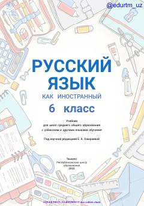

РЯ6-sinf o'quvchilari uchun rus tilini chet tili sifatida o'rgatuvchi darslik.
Ushbu darslik ta'lim o'zbek va boshqa tillarda olib boriladigan maktablarning 6-sinf o'quvchilariga rus tilini chet tili sifatida o'rgatish uchun mo'ljallangan. Kitobda o'quvchilarning o'qish, gapirish, tinglab tushunish va yozish ko'nikmalarini rivojlantirishga qaratilgan mashqlar berilgan. Darslik tarkibida interaktiv loyihalar va tinglab tushunish uchun topsiriqlar mavjud.